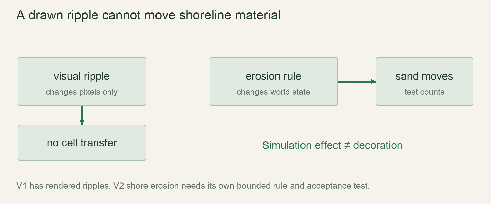

M6 / World expansionLesson 92 of 100 · ~5 min reading + build time
Erode island shores with an explicit water policy
Move a shoreline sand cell through a defined erosion rule while keeping rendered ripples and water volume separate.
Previously: Erupt a volcano on a deterministic schedule. Keep that working result available before starting this lesson.
Why we need this now
V1 water ripples are colour changes on occupied water. They cannot physically erode a coast. V2 needs a new mechanical input that reuses checked material movement without secretly creating tide water.
Your result: Move a shoreline sand cell through a defined erosion rule while keeping rendered ripples and water volume separate.

01Start with a mechanical question
A sandy edge touches water. What changes one tick later? A useful first proposal is occasional relocation of a wet, exposed sand cell into an adjacent lower empty cell when the shoreline process selects it. This represents erosion with existing matter, not accurate wave dynamics. State the eligibility, destination choices, rate and exclusions before coding.
Build a nine-cell cross-section rather than an entire island. Include sand, water, air and stone so the fixture can show both allowed movement and blocked movement. If you cannot explain exactly which source/destination changed in nine cells, a beautiful animated ocean will only hide the ambiguity.
02Keep the visual ripple out of the rule
The renderer may evaluate a sine function for a surface colour line. Its phase can change every frame while simulation is paused. If terrain motion depends on that drawing phase, rendering rate and camera presentation can change physics. Instead let a deterministic tick-based shoreline selector decide when a contact is eligible. Rendering may illustrate the same field but does not own mutation.
Tides remain removed unless separately designed. Raising the entire water level by drawing more blue pixels is not conservative water movement. A mechanical tide would require a reservoir/boundary pressure model and explicit mass policy. The present exercise performs one local transfer and claims nothing about a full tidal simulation.
03Check the full movement contract
The sample requires sand at the source, air at the destination, a one-row downward move with at most one-column horizontal difference, and a water neighbour at the source. It uses swap, preserving both source and destination occupancy. This is a focused proposal kernel: exposure and sampling priority remain caller responsibilities.
In production, mark moved cells once per executed tick, invalidate surface/dirty/support state, and do not run the same grain through a second independent powder step afterward. Record water volume before and after a closed-scene erosion run. Sand displacement may change water motion, but the erosion rule itself must not paint or delete water.
04Tune rates at two horizons
A shoreline needs visible change in an intentional clip, but an island should not vanish after a few ordinary seasons. Inspect the rate with a short exposed-beach fixture and a much longer island fixture. Tune eligibility and probability rather than exaggerating the random colour texture, which the art style forbids.
Compare wind-only, rain-only and shoreline-only runs before combining them. This isolates whether a coast changes because of the new rule or existing runoff. Record the approved v2 policy with its fixtures. If realistic wave erosion would require too much complexity, retain a simple disclosed approximation or defer the feature rather than adding an unbounded solver.
Read → predict → run → change
Walk through the working example
Complete local-transfer experiment: examples/lesson_092.rs; run cargo run --example lesson_092.
Download this worked example ↧
#[derive(Clone, Copy, Debug, PartialEq, Eq)]
enum Kind { Air, Water, Sand, Stone }
fn erode(cells: &mut [Kind], width: usize, from: usize, to: usize) -> bool {
if width == 0 || from >= cells.len() || to >= cells.len() { return false; }
let (x,y)=(from%width,from/width);
let (tx,ty)=(to%width,to/width);
if cells[from]!=Kind::Sand || cells[to]!=Kind::Air || ty!=y+1 || x.abs_diff(tx)>1 {
return false;
}
let wet = (x>0 && cells[from-1]==Kind::Water)
|| (x+1<width && from+1<cells.len() && cells[from+1]==Kind::Water);
if !wet { return false; }
cells.swap(from,to);
true
}
fn main() {
let mut cells=[Kind::Air,Kind::Air,Kind::Air,
Kind::Stone,Kind::Sand,Kind::Water,
Kind::Stone,Kind::Air,Kind::Stone];
let before=cells.iter().filter(|k|**k==Kind::Water).count();
assert!(erode(&mut cells,3,4,7));
assert_eq!(cells[4],Kind::Air);
assert_eq!(cells[7],Kind::Sand);
assert_eq!(cells.iter().filter(|k|**k==Kind::Water).count(),before);
println!("sand moved downhill; water count unchanged");
}Read what each part does
- The single-row-lower restriction makes the destination reach explicit; arbitrary-distance relocation is rejected.
- This kernel checks side water contact only. Full production exposure and contact geometry must be specified and tested separately.
- No sine-wave or renderer value appears in this function.
Expected result
sand moved downhill; water count unchangedExact version numbers, paths and compiler wording may differ. Compare the behavior and file locations, not incidental output formatting.
Prediction · repair · transfer
Exercises you actually do
Write a prediction or make an attempt before opening a solution. Use the hint if stuck; then compare reasoning and verify with the stated check. A different implementation is fine when it satisfies the same contract.
Block the destination
Replace index7 with Stone and attempt erosion again.
Need a hint?
A proposed movement still needs a free destination.
Worked solution
erode returns false and the entire array stays unchanged. Assert equality with a saved copy of the input, not just the returned boolean.
How to verify your result
Stone is not overwritten.
Remove water contact
Replace index5 with Air.
Need a hint?
The contact prerequisite must be observable.
Worked solution
The side-water test fails, so the source sand remains at index4. Existing gravity may later move it under a different rule, but this isolated erosion function does not.
How to verify your result
The isolated function leaves dry terrain unchanged.
Pause the simulation
Let the decorative ripple continue while the world is paused. Should the sand move?
Need a hint?
Drawing phase is not world state.
Worked solution
No. The erosion selector is a simulation operation and receives no ticks while paused. A changing surface colour is permitted only as a visual treatment if approved.
How to verify your result
The world hash remains fixed while rendering changes.
When it goes wrong
Start with the observed symptom. Change one assumption at a time instead of pasting fixes until the error disappears.
Coast changes when FPS changes
What is happening: Erosion is driven by the render loop.
Try this: Move selection and mutation into deterministic ticks.
Water count rises with each wave
What is happening: The ripple paints blue material rather than colour.
Try this: Keep occupancy and decoration separate.
Island disappears quickly
What is happening: Only the short-term visual rate was tuned.
Try this: Add long-horizon silhouette and mass checks before approving rates.
Explain it without the example
Why can't moving the visual ripple line alone produce mechanical shore erosion?
Reasoning to compare
The renderer changes colour, not occupancy or forces. Erosion requires a simulation rule with its own budgets and conservation choices.
Self-check only: test a prediction or ask your tutor if anything still feels arbitrary.
Finish with evidence
The island changes under the approved process without unexplained water creation or drainage. Tides remain absent unless separately designed.
Make one small variation without copying: predict it, run it and explain any difference. On another day, repeat one exercise from memory before starting the next lesson. Ask your tutor about any step you can execute but cannot explain.
This is an attempt marker, not a grade. Learning records are written only after demonstrated understanding.
Primary sources for this lesson
Use sources to verify the mechanism. The lesson itself supplies the instructions; the links are not a substitute for teaching them.